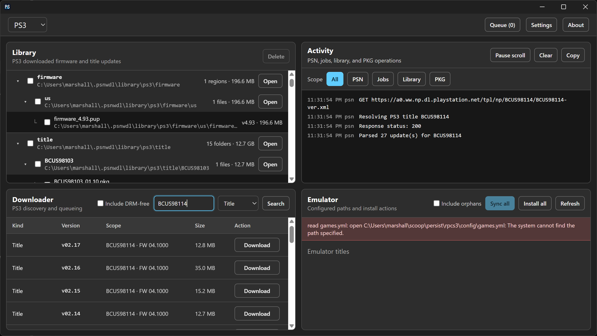
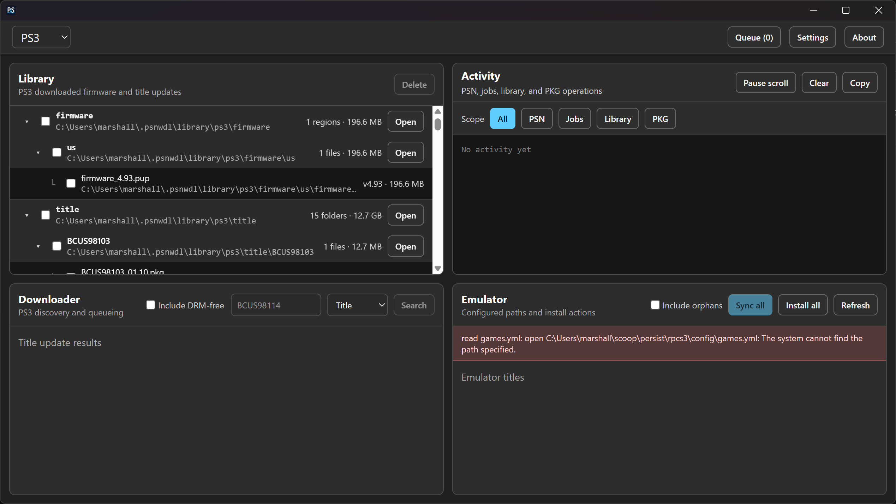
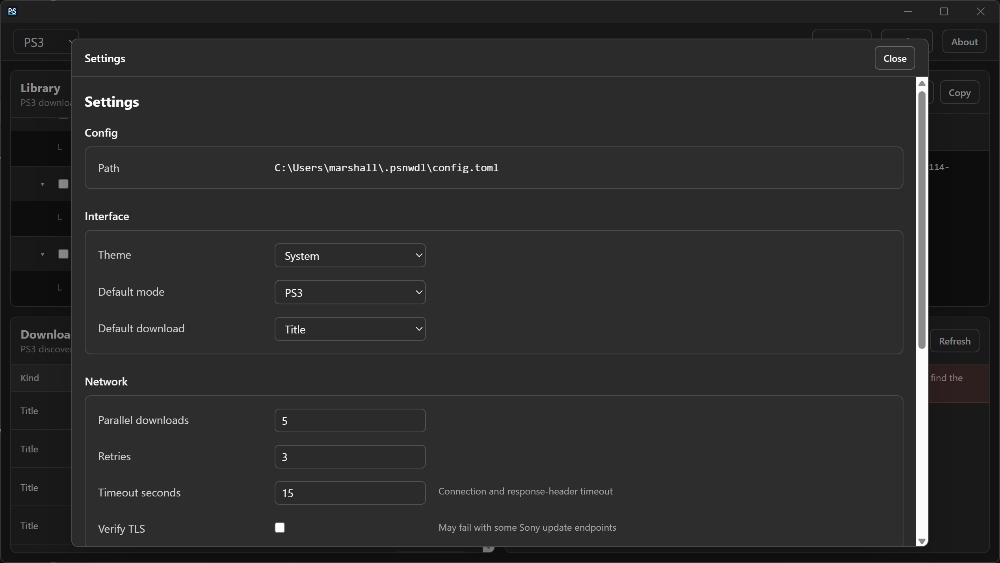

Find official packages
Search PS3, PS4 and PS Vita title updates, and browse firmware for PS3, PS4, PS Vita and PS5. PS5 title-update lookup is not supported.
Free · Open source · Windows, Linux and macOS
Find official title updates and firmware, keep a local download library, and manage PS3 updates for RPCS3 in one desktop workbench.



Search PS3, PS4 and PS Vita title updates, and browse firmware for PS3, PS4, PS Vita and PS5. PS5 title-update lookup is not supported.
Queue downloads, inspect progress and activity, and organize cached firmware and title updates by console.
Scan a configured RPCS3 library, synchronize PS3 update downloads, and explicitly install updates into the emulator library.
GitHub releases include packages for Windows, Linux and macOS on x64 and ARM64. Windows packages require Microsoft Edge WebView2 Runtime.
scoop bucket add meop https://github.com/meop/scoop-bucket
scoop install meop/psnwdl
scoop update psnwdlchoco install psnwdl
choco upgrade psnwdlThe original Chocolatey package is approved. Package metadata revisions go through separate review.
Read the project documentation for configuration and platform requirements. Report problems or ask for volunteer help through GitHub Issues.
Use only with titles and firmware you legitimately own. PSNWDL is an independent project and is not affiliated with Sony or RPCS3. Downloads and installation are separate, explicit actions.